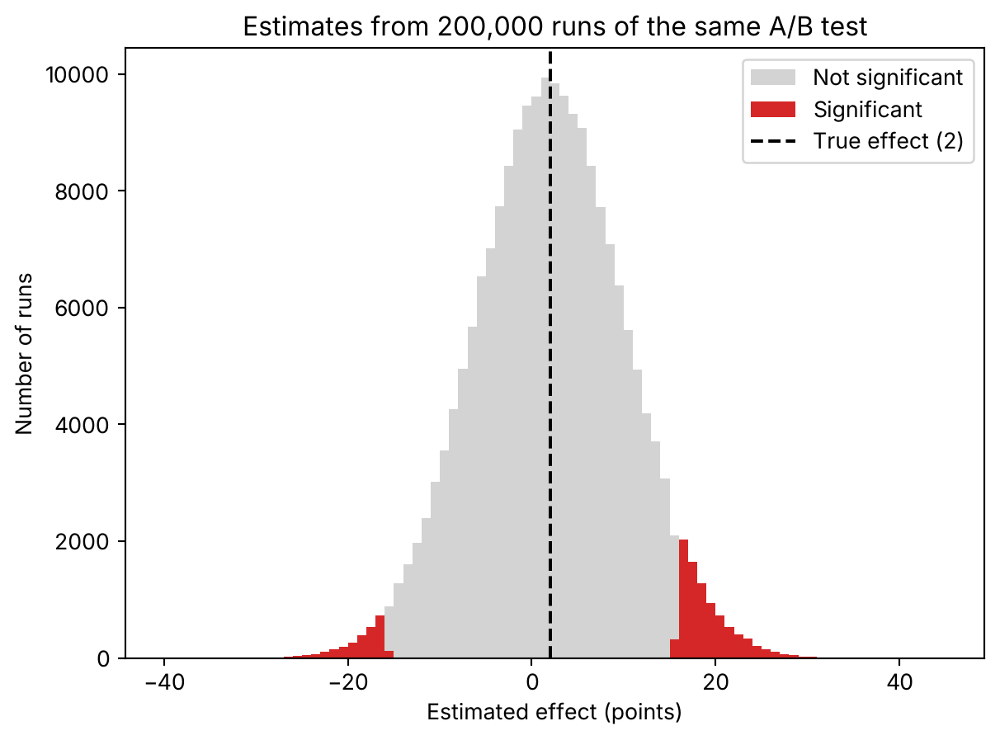

import math
import numpy as np
import matplotlib.pyplot as pltYour significant A/B test in a small segment is probably exaggerated
sampling
simulation
python
When the noise is four times the effect, the lifts that reach significance are the lucky big ones, and one in four points the wrong way. A simulation shows how much to trust them.
You run an A/B test on a small segment. The dashboard says the lift is significant: 16 points.
The true lift in my simulation was 2.
I didn’t go looking for it. This is what a significant result looks like when the segment is small.
One test, one lucky draw
Say the true lift is 2 points. Your segment is small, so the standard error of the estimate is 8.1 points. I took those two numbers from the example in Gelman and Carlin’s paper, cited at the end. Everything else here I simulated myself.
A test at the usual 5% level calls the result significant when the estimate is more than 1.96 standard errors from zero. Here’s where that line sits.
np.random.seed(119)
true_effect = 2.0 # true lift, in points
se = 8.1 # standard error of the estimate
z_crit = 1.96 # two-sided test at 5%
threshold = z_crit * se
print(f"Significance threshold: |estimate| > {threshold:.2f}")Significance threshold: |estimate| > 15.88The threshold is 15.88 points. The true lift is 2.
So your estimate can only be significant if noise adds almost 14 points to it. Or takes 18 away.
Now I run the same test 200,000 times, with the same true lift and the same noise.
n_sims = 200_000
estimates = np.random.normal(true_effect, se, n_sims)
significant = np.abs(estimates) > thresholdThe first significant run is the one I opened with.
first = estimates[significant][0]
print(f"First significant run: {first:.2f} (z = {first/se:.2f}), true effect {true_effect}")First significant run: 16.13 (z = 1.99), true effect 2.0It is the first one the simulation produced, not one I picked. The estimate is 16.13, and the truth is 2.
What the filter lets through
The share of runs that cross the line is the power of the test. If the effect is real, it is the chance that the test comes out significant, in either direction.
Here it is small. Now look at the survivors.
sig = estimates[significant]
power = significant.mean()
type_s = (sig < 0).mean()
type_m = (np.abs(sig) / true_effect).mean()
print(f"Power: {power:.4f}")
print(f"Type S (wrong sign among significant): {type_s:.4f}")
print(f"Type M (mean exaggeration, |est|/true): {type_m:.3f}")
print(f"Mean significant estimate, sign kept: {sig.mean():.2f}")Power: 0.0577
Type S (wrong sign among significant): 0.2330
Type M (mean exaggeration, |est|/true): 9.527
Mean significant estimate, sign kept: 10.33The power is about 6%. Almost no test of this kind reaches significance.
The ones that do are a strange sample. Among the significant results, close to one in four has the wrong sign. Ignore the sign, and the average significant estimate is about 9.5 times the true lift.
Andrew Gelman and John Carlin built a design check around these two numbers in 2014. One is the Type S error rate: the share of significant results with the wrong sign. The other is the exaggeration ratio: how many times too big a significant estimate is, on average. Classical power analysis tells you how likely you are to cross the line. These two tell you what you’re holding when you do.
A significant result from a low-power test is a sample cut from the tails, so it is big by construction.
Check it against the formula
A simulation can fool you if the code is wrong. With a normal estimate there is an exact answer to compare against.
The estimate is normal, with mean 2 and standard deviation 8.1. Power is the area of the two tails past the threshold. The exaggeration is the average size of the estimate inside those tails, divided by 2. I get that one by integrating on a fine grid.
def phi(x):
return 0.5 * math.erfc(-x / math.sqrt(2))
lam = true_effect / se
p_pos = 1 - phi(z_crit - lam) # significant, right sign
p_neg = phi(-z_crit - lam) # significant, wrong sign
power_a = p_pos + p_neg
type_s_a = p_neg / power_a
# Mean |estimate| given significant, by numerical integration on a fine grid
x = np.linspace(-12, 12, 2_000_001) * se + true_effect
dens = np.exp(-0.5 * ((x - true_effect) / se) ** 2) / (se * math.sqrt(2 * math.pi))
mask = np.abs(x) > threshold
dx = x[1] - x[0]
type_m_a = (np.abs(x[mask]) * dens[mask]).sum() * dx / power_a / true_effect
print(f"Analytic power: {power_a:.4f}")
print(f"Analytic type S: {type_s_a:.4f}")
print(f"Analytic type M: {type_m_a:.3f}")Analytic power: 0.0570
Analytic type S: 0.2396
Analytic type M: 9.537The formula gives 5.7% power, 24.0% wrong signs and an exaggeration of 9.54. The simulation gave 5.8%, 23.3% and 9.53.
The small gap in the wrong-sign rate is Monte Carlo noise. Only about 11,500 runs are significant, so that rate carries an error of around 0.4 points.
Seeing the cut
Here are all 200,000 estimates. The significant ones are in red.
fig, ax = plt.subplots()
bins = np.linspace(-40, 45, 86)
ax.hist(estimates[~significant], bins=bins, color="lightgray", label="Not significant")
ax.hist(sig, bins=bins, color="tab:red", label="Significant")
ax.axvline(true_effect, color="black", linestyle="--", label="True effect (2)")
ax.set_xlabel("Estimated effect (points)")
ax.set_ylabel("Number of runs")
ax.set_title("Estimates from 200,000 runs of the same A/B test")
ax.legend()
plt.show()
The gray bell is centered near 2, where the black line is. The red lives in the tails and nowhere else.
Look at the left tail. It is smaller than the right one, but it is there. Those are the tests that tell you, with a p-value under 0.05, that your change hurts. It doesn’t.
What I’d do with this
Next time a small segment comes back significant, don’t read the estimate first. Check how large the standard error is next to the lift you could plausibly expect.
If the standard error is several times the plausible lift, only big estimates can pass the filter. A big estimate is what you get, whatever the true lift is.
I’d report that estimate as a likely overestimate. And I wouldn’t build the quarterly plan on the 16.
Gelman and Carlin, “Beyond power calculations: Assessing Type S (sign) and Type M (magnitude) errors”, Perspectives on Psychological Science 9(6), 641–651, 2014. doi:10.1177/1745691614551642.